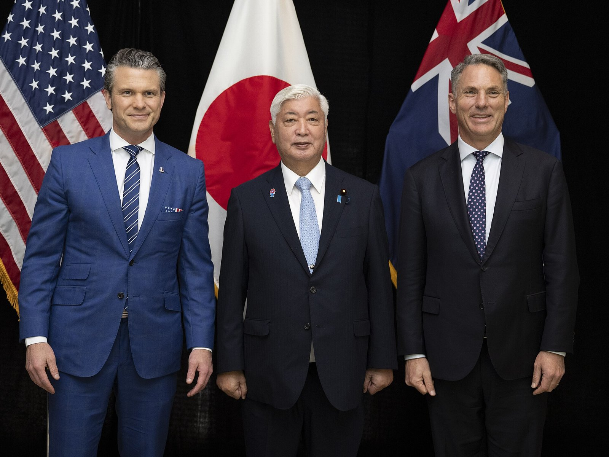

[한일수교 60년㉒] 일본 방위비 2% 2년 앞당겼다, 미국은 3.5%를 요구한다
GDP 대비 2% 목표를 2025년도에 조기 달성… 3.5%면 연 20조엔을 넘는다
2026년 4월 살상무기 수출 길 열려, 비핵 3원칙은 연말 안보문서에서 갈린다
다카이치 첫 방위백서도 「독도는 일본 땅」… 22년째다
AI경세제민=김갑봉 기자 | 일본이 군비를 늘리는 속도가 빨라졌다. 2027년도 목표였던 국내총생산(GDP) 대비 방위비 2%를 2025년도에 이미 채웠다. 미국은 3.5%를 요구한다. 2026년 4월에는 살상 능력이 있는 무기의 수출 길도 열렸다. 연말에 고칠 안보 3문서에서 비핵 3원칙과 원자력잠수함이 쟁점이다. 그러면서 2026년 8월 첫 방위백서에는 독도를 자기 땅이라고 또 적었다.

2%는 이미 넘었고 다음은 3.5%다
2022년 12월 기시다 후미오 내각이 안보 3문서를 고치면서 2027년도까지 방위 관련 예산을 GDP 대비 2% 수준으로 올리기로 했다. 5년 동안 43조엔을 쓰는 계획이었다.
다카이치 사나에 내각은 그 목표를 2025년도에 앞당겨 채웠다. 2년을 당긴 것이다.
미국은 더 요구한다. 도널드 트럼프 행정부는 GDP 대비 3.5%, 관련 경비까지 포함하면 5%를 일본에 요구하고 있다. 3.5%를 적용하면 일본 방위비는 한 해 20조엔을 넘을 수 있다. 자민당은 2026년 6월 9일 3.5%대를 예시로 들며 증액을 촉구했다.
그러나 재원이 걸린다. 일본의 공공부채는 재무성 장기채권 기준으로 GDP 대비 211% 수준이고, 국제통화기금(IMF) 등이 쓰는 일반정부 총부채 기준으로는 240~250%에 이른다. 세계에서 가장 높은 축이다. 법인세와 담뱃세, 소득세 증세를 추진했으나 물가 때문에 2026년 4월로 미뤘다. 증세 부담 탓에 3.5% 목표를 문서에 적는 것은 보류하는 쪽으로 가고 있다는 보도가 나왔다.
2026년 4월, 살상무기 수출 길이 열렸다
무기 수출 규제도 풀렸다. 일본은 오랫동안 구난·수송·경계·감시·소해 다섯 가지 용도로만 무기 수출을 허용했다.
2026년 4월 방위장비 이전 3원칙의 운용지침이 개정되면서 살상 능력이 있는 무기의 수출 길이 넓어졌다. 정부와 여당 안에서는 탄약 공장 같은 군수시설을 국유화해 민간 기업이 운영하게 하는 방안도 거론된다. 방위산업을 성장 전략의 한 축으로 삼겠다는 뜻이다.
비핵 3원칙과 핵잠수함, 연말에 갈린다
일본 정부는 2026년 안으로 안보 3문서를 다시 고치려 한다. 국가안전보장전략과 국가방위전략, 방위력정비계획 셋이다. 2013년 국가안전보장전략이 처음 나왔고 2022년에 한꺼번에 고쳤다.
쟁점 가운데 하나가 비핵 3원칙이다. 핵무기를 만들지도, 갖지도, 들여오지도 않는다는 원칙이다. 지금 국가안전보장전략에는 이를 지킨다고 적혀 있다. 다카이치 총리는 과거 저서에서 '들여오지 않는다'는 대목의 현실성을 문제 삼은 적이 있다.
여론은 다르다. 아사히신문이 2026년 3월과 4월에 조사한 결과 비핵 3원칙을 유지해야 한다는 응답이 75%, 다시 봐야 한다는 응답이 21%였다.
원자력잠수함 도입도 쟁점이다. 오래 잠항하고 멀리 움직일 수 있어야 한다는 주장이 있는 반면 개발비와 운용 인력, 원자력기본법과 어긋나지 않는지가 과제로 꼽힌다. 2026년 9월 30일 중국 외교부 브리핑에서 궈자쿤 부대변인이 일본의 핵무기와 원자력잠수함 보유 논의를 두고 다카이치 총리를 직함 없이 이름으로만 부른 일도 이 맥락에서 나왔다.
토마호크 400발, 배치는 늦어진다
일본은 미국에서 토마호크 순항미사일 400발을 사들이기로 했다. 최신형 블록5 200발과 블록4 200발이다. 사거리는 1600~1700㎞로 한반도와 타이완해협, 중국 동부 연안이 사정권에 든다.
2025년 10월 19일 해상자위대 이지스 구축함이 인수를 위해 미국으로 떠났다. 도입 시기를 2026회계연도에서 2025회계연도로 한 해 앞당긴 조치였다. 2026년 3월에는 이지스함이 토마호크 발사 능력을 갖췄다는 보도가 나왔다.
그러나 2026년 5월 미국의 토마호크 재고 부족으로 일본 도입이 최대 2년 늦어질 수 있다는 보도가 나왔다. 7월에는 일본 이지스함 장착에는 문제가 없다는 반론도 나왔다. 계획과 실제 사이에 틈이 있다.
사거리 1600㎞가 넘는 미사일을 갖는 것은 반격 능력, 곧 상대 기지를 때릴 수 있는 능력을 뜻한다. 평화헌법 9조가 말한 전수방위 원칙은 사실상 바뀐 셈이다.
타이완 발언이 남긴 것
2025년 11월 7일 다카이치 총리는 중의원 예산위원회에서 "타이완에 대한 무력 공격이 발생해 전함이 해상을 봉쇄하고, 미국이 지원에 들어갔는데 이를 막기 위한 무력행사가 발생한다면 존립위기 사태가 될 수 있다"고 말했다.
존립위기 사태는 2015년 아베 신조 정권이 만든 개념이다. 일본이 직접 공격받지 않아도 동맹국이 공격받으면 집단자위권을 쓸 수 있다는 논리다. 아베나 아소 다로 전 총리도 비슷한 말을 했지만 모두 자리에서 물러난 뒤였다. 현직 총리가 타이완 군사 개입을 입에 올린 것은 처음이었다.
그 발언 뒤 중일관계는 회복되지 않았다. 중국은 '일본 집권 당국', '일본 현직 지도자' 같은 우회 표현을 쓰기 시작했고 2026년 9월 30일에는 총리 직함까지 뺐다.
미국 안에서는 타이완 유사시 한반도를 쓰는 논의가 공개적으로 나온다. 스탠퍼드대 후버연구소와 요크타운연구소 연구원들은 2025년 11월 4일 기고에서 "일본과 한국은 세계적 수준의 조선소와 상선대를 보유하고 있어 수송 능력을 확대해야 한다"고 주장했다. 브루킹스연구소 앤드루 여 선임연구원은 2025년 3월 28일 논평에서 평택 캠프 험프리스 같은 주한미군 기지 활용을 검토하게 될 것이라고 했다.
주한미군 시설이 한반도 방위를 넘어 역외 작전에 쓰일 수 있다는 뜻이다. 한국이 스스로 정하지 않은 채 후방기지가 될 위험이 거기 있다.
그러면서 독도는 22년째다
2026년 8월 4일 일본 방위성이 각의를 거쳐 방위백서를 냈다. 다카이치 내각의 첫 방위백서다.
독도를 일본 고유 영토라고 적었고 영토 문제가 "여전히 미해결 상태로 존재한다"고 썼다. 독도 자리에 '다케시마를 둘러싼 영토 문제'라고 표기했고, 경계·감시 지도에서는 독도 둘레에 파란 선을 그어 자국 영해로 표시했다. 방공식별구역 지도에서는 한국 방공식별구역 안의 독도를 '다케시마'로 적었다. 2005년 이후 22년째다.
같은 백서에서 한국은 국제사회의 과제에 함께 대응해야 할 "중요한 이웃 나라"로 적혔다. 2024년부터 3년째 같은 표현이다. 중국의 군사 동향은 "지금까지 없었던 최대의 전략적 도전"으로 규정했고 베이징에서 쏜 2000㎞ 탄도미사일의 사정권을 그린 지도를 실었다. 북한의 핵과 미사일은 주요 위협으로 꼽았다.
한국 외교부 박두순 대변인은 정례브리핑에서 강력히 항의하고 즉각 철회를 촉구했다. 외교부는 주조 가즈오 주한 일본대사관 총괄공사를 불러 유감과 항의를 전했다. 일본의 주장이 독도에 대한 한국의 주권에 아무 영향을 미치지 않는다는 점, 어떤 도발에도 단호히 대응하겠다는 점을 밝혔다.
협력과 갈등이 같은 책상에 있다
경제 쪽에서는 협력이 이어진다. 2023년 5월 3일 한일 경제안보대화가 출범해 공급망과 핵심기술, 에너지 안보에서 협력하기로 했다. 삼성전자는 일본 요코하마에 최대 400억엔을 들여 차세대 반도체 패키징 연구개발 센터를 세우기로 했다. 일본 정부와 요코하마시가 보조금을 댄다.
한국의 대일 무역적자는 1965년 수교 이후 이어지고 있다. 2019년 수출규제 뒤 소재·부품·장비 자립에 나섰으나 핵심 소재의 일본 의존은 남아 있다. 반대로 일본 장비·소재 기업에는 삼성전자와 SK하이닉스가 큰 고객이다.
군사 교류는 다르다. 2025년 11월 한국 공군 특수비행팀 블랙이글스가 두바이 에어쇼로 가는 길에 오키나와 나하 기지에서 급유하려 했으나 일본이 거부했다. 블랙이글스의 독도 상공 비행을 문제 삼은 것이다. 자위대 음악축제에 한국 군악대가 참가하는 일정도 함께 멈췄다.
경제안보에서는 손을 잡고, 역사와 영토에서는 부딪친다. 두 가지가 같은 책상 위에 있다.
한국이 정해야 할 것
일본의 재무장은 멈추지 않는다. 2%를 2년 앞당겼고 다음은 3.5% 논의다. 살상무기 수출이 열렸고 비핵 3원칙과 원자력잠수함이 연말 문서에서 갈린다.
한국은 두 가지를 동시에 봐야 한다. 하나는 경제안보 협력의 실익이다. 반도체와 소재에서 두 나라는 서로의 거래처다. 다른 하나는 안보 구조의 변화다. 타이완 유사시 한반도가 어떤 자리에 놓이는지, 그 자리를 누가 정하는지다.
일본이 스스로 정하고 미국이 요구하는 사이에서, 한국만 정하지 않고 있어서는 안 된다. 수교 61년째가 그 물음을 다시 올려놓았다.
참고문헌
·"日다카이치, 안보3문서 개정본격화…방위비·비핵원칙 등 8대 쟁점", 아시아투데이, 2026년 6월 8일. https://www.asiatoday.co.kr/kn/view.php?key=20260608010002583
·"다카이치 첫 방위백서에 '독도는 일본 땅'…22년째 억지 주장", 경향신문, 2026년 8월 4일. https://www.khan.co.kr/article/202608042121015/
·"일본 자민당, 방위비 증액 촉구…'GDP 3.5%대' 예시", 연합뉴스, 2026년 6월 9일.
·"증세 부담에…일본, 방위비 'GDP 3.5%' 목표 명시 보류", 서울경제, 2026년. https://m.sedaily.com/article/20102692
·"美 토마호크 재고 부족에…日 도입 최대 2년 지연 가능성", 연합뉴스, 2026년 5월 25일.
·"일본, 이지스함 토마호크 발사 능력 확보", 연합뉴스, 2026년 3월 27일.
·"일본, 방위산업 규제 싹 풀고 성장전략 동력으로", 민들레, 2026년. https://www.mindlenews.com/news/articleView.html?idxno=19861
·"中, 다카이치 '총리' 호칭 뺐다", 아시아경제, 2026년 10월 3일.
·아산정책연구원, 「'적극적 행위자'로의 전환: 다카이치 내각 출범 이후」, 이슈브리프 2025-39.
·일본 방위성, 「令和8年版 防衛白書」, 2026년 8월 4일.
※ 이 기사는 AI 프로그램 클로드를 활용해 작성했습니다.
관련기사
- [한일수교 60년㉓] 한국 1인당 소득이 일본을 8112달러 앞질렀다
- [한일수교 60년㉑] 한중 하늘길 7년 만에 주 70회 열렸다, 그래도 자유화는 아니다
- [한일수교 60년 번외①] 대사관도 동포가 지었다, 재일 한국공관 9개의 내력
- [한일수교 60년⑳] 니케이는 사상 최고인데 세계 10위 안에 일본 기업은 없다
저작권자 © AI경세제민 무단전재 및 재배포, AI학습 및 활용 금지